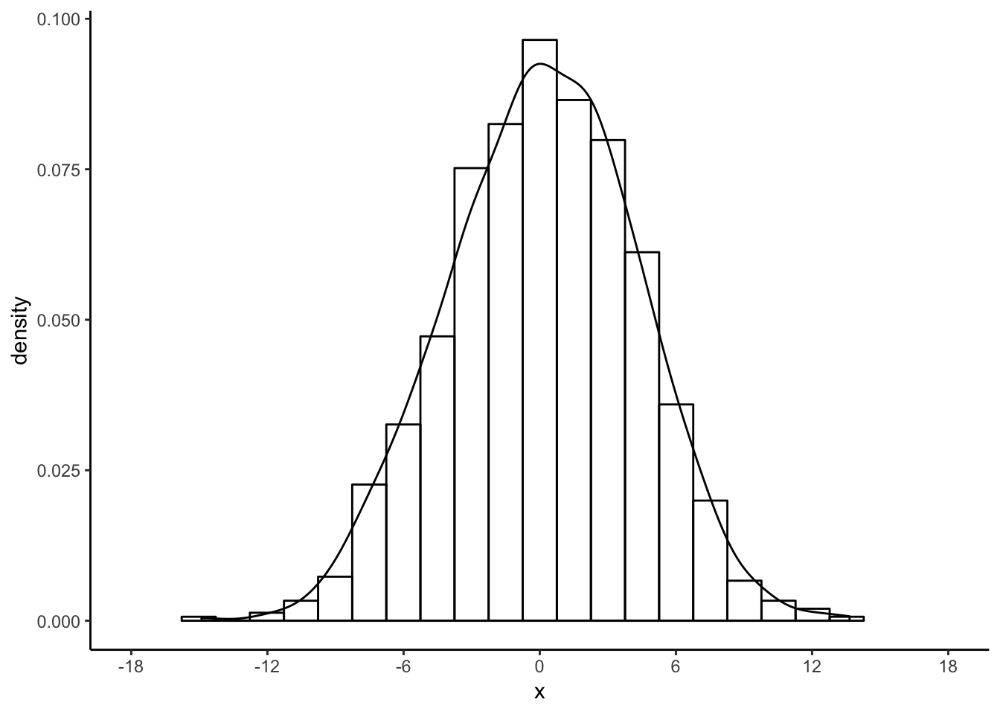
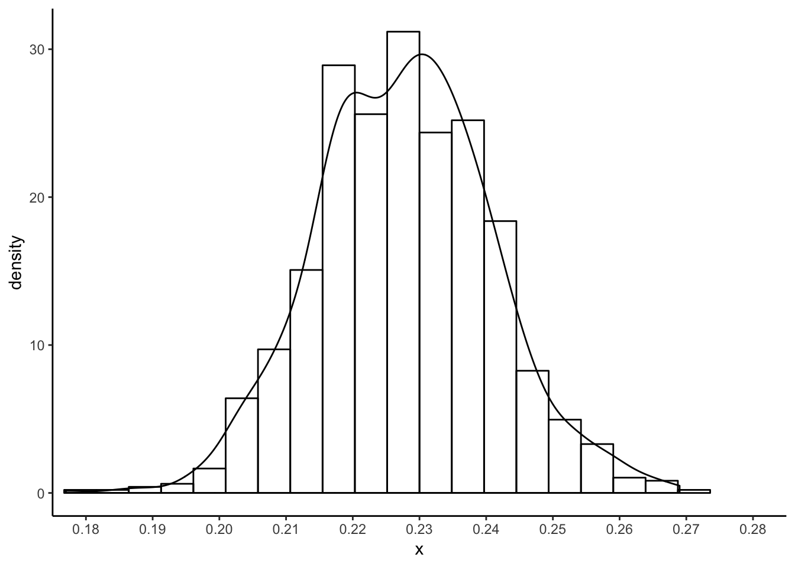
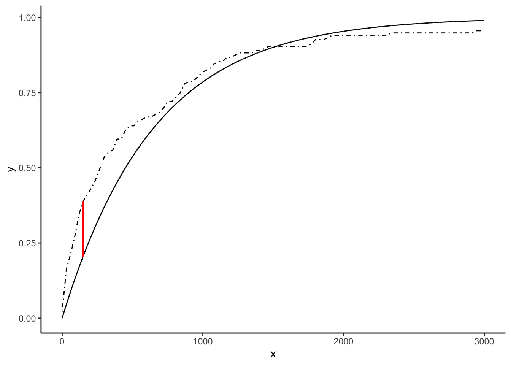
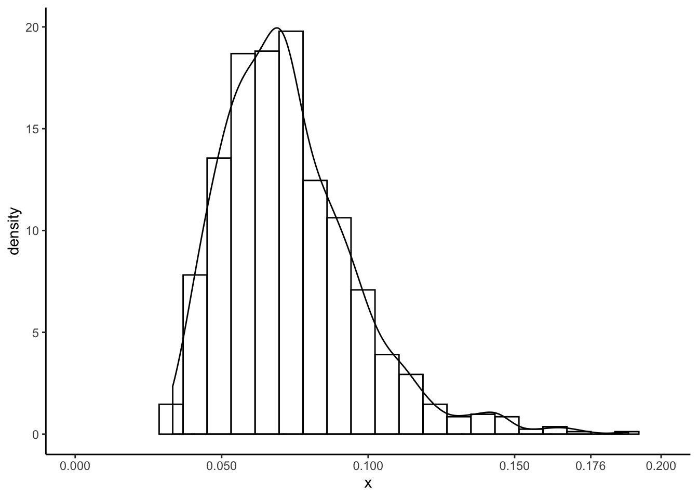
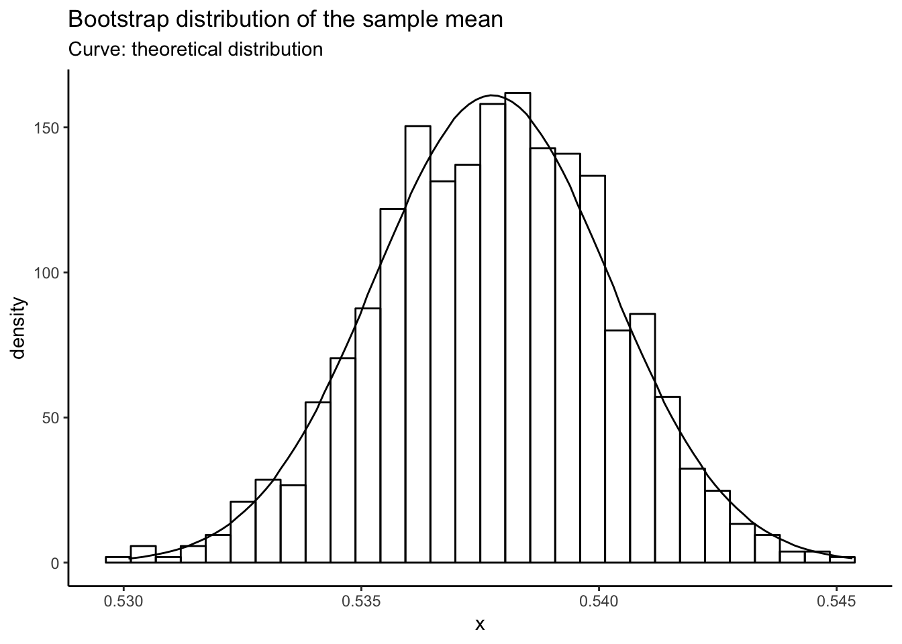
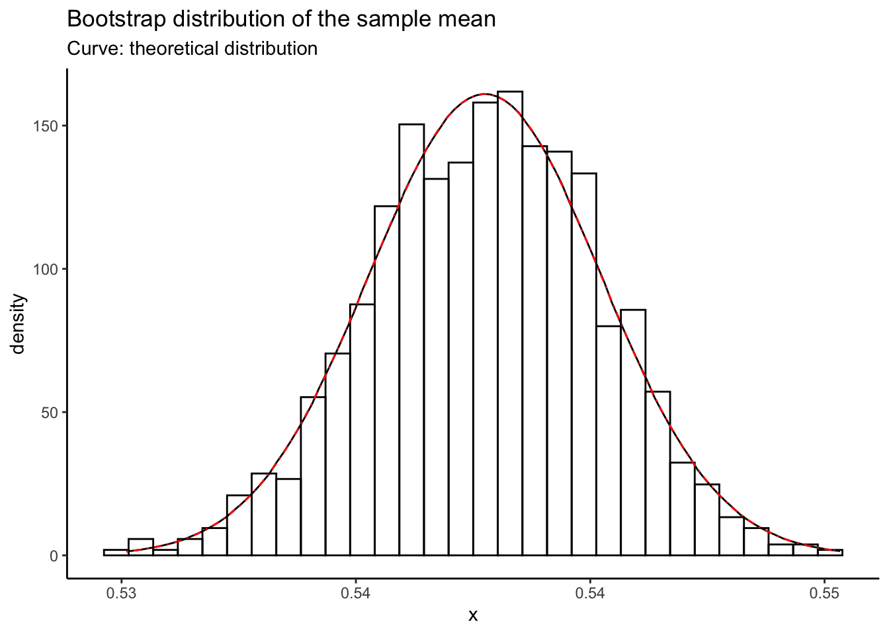

Chapter 7 Supplement to Chapter 18
This chapter implements much of the analysis shown in chapter 20 of A Modern Introduction to Probability and Statistics. R code is given for the simple textbook datasets used in the book, and then the concepts are illustrated on real data.
All datasets from the book can be downloaded here: https://www.tudelft.nl/en/eemcs/the-faculty/departments/applied-mathematics/applied-probability/education/mips/.
7.1 The Bootstrap (Chapter 18)
The bootstrap is one of the most foundational computational tools in modern statistics. It as important on the computation side as basic calculus is on the math side. Any time you have an estimator and are interested in its repeated sampling properties (which is much of what statistics is), you can simulate data, compute the estimator, and just look at the results to get an idea of what’s going on. This is called the “parametric” bootstrap, and you have been doing it for the whole course in these supplementary notes.
This chapter introduces the “empirical” bootstrap, which allows you to use this idea when you don’t know the distribution of the data! The idea is to sample with replacement from the data that you have. A lot of the statistical properties of estimators are still recoverable under this type of sampling.
It seems like magic. Indeed, the name “bootstrap” comes from the old expression “lift yourself up by your bootstraps”, which roughly means to do something seemingly impossible or contradictory in order to better your situation. One of the best-named concepts in all of stats, in my opinion.
7.1.1 Empirical bootstrap: Old Faithful data
Let’s recreate Figure 18.1:
library(tidyverse)
# Read in old faithful, copied from chapter 1:
oldfaithful <- readr::read_csv(
file = "data/MIPSdata/oldfaithful.txt", # Tell it where the file is
col_names = "time", # Tell it that the first row is NOT column names, and at the same time, tell it what name you want for the column.
col_types = "n" # Tell it that there is one column, and it is "numeric" (n)
)
# Check what was read in using the dplyr::glimpse() function
dplyr::glimpse(oldfaithful)## Observations: 272
## Variables: 1
## $ time <dbl> 216, 108, 200, 137, 272, 173, 282, 216, 117, 261, 110, 235,…# Bootstrap: sample with replacement
set.seed(45356) # So you can reproduce my results
B <- 1000 # Number of bootstrap resamples to take
n <- nrow(oldfaithful) # Sample size
bootstrapmeans <- 1:B %>%
map(~sample(oldfaithful$time,n,replace = TRUE)) %>%
map(~(mean(.x) - mean(oldfaithful$time))) %>% # Compute the CENTRED mean
reduce(c)
# Plot the hisrogram and density estimate together
tibble(x = bootstrapmeans) %>%
ggplot(aes(x = x)) +
theme_classic() +
geom_histogram(aes(y = ..density..),bins = 20,colour = "black",fill = "transparent") +
geom_density() +
scale_x_continuous(breaks = seq(-18,18,by=6)) +
coord_cartesian(xlim = c(-18,18))
Exercise: compute the book’s estimate of \(P(|\bar{X}_{n} - \mu|)\). Using the
above set.seed(45356) I got the following (slightly different than the book):
## [1] 0.234Exercise: now, repeat the entire bootstrap procedure \(1000\) times and
plot a histogram and kernel density estimate of \(P(|\bar{X}_{n} - \mu|)\).
I got the following with set.seed(8768432):

7.1.2 Parametric Bootstrap: software data
Read in the software data. Try to do it yourself before looking:
## 30
## 113
## 81
## 115
## 9
## 2
## 91
## 112
## 15
## 138
## 136 data/MIPSdata/software.txtsoftware <- readr::read_csv(
file = "data/MIPSdata/software.txt",
col_names = "time",
col_types = "n"
)
glimpse(software)## Observations: 136
## Variables: 1
## $ time <dbl> 30, 113, 81, 115, 9, 2, 91, 112, 15, 138, 50, 77, 24, 108, …Plot the CDF of the estimated distribution against the empirical CDF of the data. The \(t_{ks}\) described in the book is the maximum vertical distance between these two curves:
lambdahat <- 1/mean(software$time)
samppoints <- seq(0,3000,by=1)
expcdf <- pexp(samppoints,rate = lambdahat)
empcdf <- ecdf(software$time)
tibble(x = samppoints,y = expcdf) %>%
ggplot(aes(x = x,y = y)) +
theme_classic() +
geom_line() +
stat_function(fun = empcdf,linetype = "dotdash")
Compute a bootstrap sample of \(T_{ks}\):
set.seed(97876856)
compute_tks <- function() {
samppoints <- seq(0,3000,by=1)
n <- nrow(software)
samp <- rexp(n,rate = lambdahat)
ecdfboot <- ecdf(samp)(samppoints)
expcdf <- pexp(samppoints,rate = lambdahat)
max(abs(ecdfboot - expcdf))
}
B <- 1000
tksboot <- 1:B %>% map(~compute_tks()) %>% reduce(c)
tibble(x = tksboot) %>%
ggplot(aes(x = x)) +
theme_classic() +
geom_histogram(aes(y = ..density..),bins = 20,colour = "black",fill = "transparent") +
geom_density() +
scale_x_continuous(breaks = c(seq(0,.2,by=.05),.176)) +
coord_cartesian(xlim = c(0,.2))
Exercise: the above compute_tks() is a bit tricky. Write out the exact algorithm
I use to compute \(T_{ks}\). Basically I am asking you to expand on step 2. of the
algorithm presented in the book on page 279.
7.1.3 Extended example: the standard error of a proportion
Dozens of news articles are published every day with claims that “xx% of Canadians say that yy”, where xx is some percentage and yy is some claim that the news company wants to make. These articles have a significant impact on our public discourse.
How could it be that every day, there are so many earth-shattering claims? It’s almost like most of them aren’t actually true. But then why are they published, and why do we believe them?
The missing ingredient is variability. These news articles most often only report point estimates– the “xx%”. They don’t report the standard error of these estimates, which give you a measure of the variability, and hence uncertainty, in the conclusions that are made based off of them.
We can use the bootstrap to get an idea of the variability in estimates based off of surveys. Because most news articles don’t link to the raw data (another reason not to believe the stuff that these for-profit companies push), we’ll use a general budget survey from the Government of Canada, with responses from Alberta residents. You can get the data in excel format https://open.canada.ca/data/en/dataset/2a5992c4-a050-46b8-b735-641cbc799a8e. You should open the file in excel and save it as a .csv, or if you don’t have excel, I posted it on the course website for you.
Let’s read the data into R. We know it has a header row (because we opened it
in excel). There is a numeric ID column, two date columns (which we don’t need),
and 58 numeric response columns. I removed the first three (blank) and fourth (information)
rows from my
.csv, and you should do the same in excel if you have it.
col_types <- c(
"ncc",
stringr::str_c(rep("n",58),collapse = "")
) %>%
stringr::str_c(collapse = "")
col_types # Understand the above code by running it in pieces and looking at the results.## [1] "nccnnnnnnnnnnnnnnnnnnnnnnnnnnnnnnnnnnnnnnnnnnnnnnnnnnnnnnnnnn"## Warning: Missing column names filled in: 'X17' [17], 'X18' [18],
## 'X19' [19], 'X20' [20], 'X21' [21], 'X22' [22], 'X23' [23], 'X24' [24],
## 'X26' [26], 'X27' [27], 'X28' [28], 'X29' [29], 'X30' [30], 'X31' [31],
## 'X33' [33], 'X34' [34], 'X35' [35], 'X36' [36], 'X37' [37], 'X38' [38],
## 'X39' [39], 'X40' [40], 'X41' [41], 'X42' [42], 'X44' [44], 'X45' [45],
## 'X46' [46], 'X47' [47], 'X48' [48], 'X49' [49], 'X50' [50], 'X51' [51],
## 'X52' [52], 'X53' [53], 'X55' [55], 'X56' [56], 'X57' [57], 'X58' [58],
## 'X59' [59]## Observations: 40,513
## Variables: 61
## $ `Respond-ent ID` <dbl> …
## $ StartDate <chr> …
## $ CompletedDate <chr> …
## $ `Q1: To what extent do you think low oil prices impact the Alberta government's ability to budget?` <dbl> …
## $ `Q2: How concerned are you about the $7B shortfall?` <dbl> …
## $ `Q3: Should government take action now, wait six months, or hold out for high oil prices?` <dbl> …
## $ `Q4: Government needs:` <dbl> …
## $ `Question 5 a) Cut spending` <dbl> …
## $ `Question 5 b) Raise taxes and user fees` <dbl> …
## $ `Question 5 c) Borrow money` <dbl> …
## $ `Question 6 a) Reduce expenditures` <dbl> …
## $ `Question 6 b) Raise taxes and user fees` <dbl> …
## $ `Question 6 c) Run a deficit` <dbl> …
## $ `Q7: Are current tax rates in Alberta higher, above average or lower?` <dbl> …
## $ `Q8: How important is it that AB taxes are lower?` <dbl> …
## $ `Q9: In what ways can the government act to increase revenue without jeopardizing Alberta's competitive position? (1 = selected; 0 = not selected)` <dbl> …
## $ X17 <dbl> …
## $ X18 <dbl> …
## $ X19 <dbl> …
## $ X20 <dbl> …
## $ X21 <dbl> …
## $ X22 <dbl> …
## $ X23 <dbl> …
## $ X24 <dbl> …
## $ `Q10: If the government needs to increase its revenues through taxation, are there options you feel should NOT be considered? (1 = selected; 0 = not selected)` <dbl> …
## $ X26 <dbl> …
## $ X27 <dbl> …
## $ X28 <dbl> …
## $ X29 <dbl> …
## $ X30 <dbl> …
## $ X31 <dbl> …
## $ `Q11: Where would you tolerate cuts? (1 = Selected; 0 = Not Selected)` <dbl> …
## $ X33 <dbl> …
## $ X34 <dbl> …
## $ X35 <dbl> …
## $ X36 <dbl> …
## $ X37 <dbl> …
## $ X38 <dbl> …
## $ X39 <dbl> …
## $ X40 <dbl> …
## $ X41 <dbl> …
## $ X42 <dbl> …
## $ `Q12: And are there options you feel should NOT be touched? (1 = Selected; 0 = Not selected)` <dbl> …
## $ X44 <dbl> …
## $ X45 <dbl> …
## $ X46 <dbl> …
## $ X47 <dbl> …
## $ X48 <dbl> …
## $ X49 <dbl> …
## $ X50 <dbl> …
## $ X51 <dbl> …
## $ X52 <dbl> …
## $ X53 <dbl> …
## $ `Q13: Indicate whether you Don't Know, Disagree or Agree. (1 = Don't know; 2 = Disagree; 3 = Agree)` <dbl> …
## $ X55 <dbl> …
## $ X56 <dbl> …
## $ X57 <dbl> …
## $ X58 <dbl> …
## $ X59 <dbl> …
## $ `Q15: Years you've lived in AB` <dbl> …
## $ `Q16: What part of the province do you live in?` <dbl> …Ugly! There are some missing column names that were in the fourth row. If we needed all these data, we would have to go in excel and manually label the columns correctly, since the analysts at the government didn’t.
Look at the column names and start to think about the kind of news headlines they could generate. I like the first one: “Q1: To what extent do you think low oil prices impact the Alberta government’s ability to budget?” could lead to things like “Albertans have given up hope: more than half of Albertans believe their province is unable to budget due to the low price of oil.” Hey, it generates clicks!
Here, let’s estimate the proportion of Albertans who answered \(1\) (“A Great Deal”) to the above question.
Exercise: there are nrow(budget) survey responses. The number who respond 1
can be modelled as a Binomial random variable. Derive and calculate the standard
deviation of the sample proportion of respondents who answered 1. I got \(0.0428\).
Is this higher or lower than you would expect with this number of respondents?
set.seed(29394032)
origsamp <- as.numeric(budget[["Q1: To what extent do you think low oil prices impact the Alberta government's ability to budget?"]] == 1)
n <- length(origsamp)
# Convert to 0/1 indicator of response == 1
# Sample proportion:
phat <- mean(origsamp)
phat## [1] 0.5377533## [1] 0.00247703# So the mean is .5378 and the standard error is about 0.0428 (theoretically).
# Bootstrap: repeatedly resample and calculate the mean. The estimated standard error
# of the sample mean is then the standard error of these means.
doboot <- function(B) {
1:B %>%
map(~sample(origsamp,n,replace = TRUE)) %>%
map(mean) %>%
reduce(c)
}
bootmeans <- doboot(1000)
mean(bootmeans) # Pretty close!## [1] 0.5377662## [1] 0.00244279tibble(x = bootmeans) %>%
ggplot(aes(x = x)) +
theme_classic() +
geom_histogram(aes(y = ..density..),bins = 30,colour = "black",fill = "transparent") +
stat_function(fun = rlang::as_function(~n * dbinom(round(n * .x),size = n,prob = phat))) +
labs(title = "Bootstrap distribution of the sample mean",
subtitle = "Curve: theoretical distribution")
Exercise: inside stat_function(fun = rlang::as_function(~n * dbinom(round(n * .x),size = n,prob = phat))) I
specify the theoretical density of the sample mean. Derive this formula yourself using the change of variables
formula.
Exercise: derive an appropriate normal approximation to the binomial distribution for use in this example.
Add it to the above plot using another stat_function call, with colour = "red" and linetype = "dotdash". I got the following:

The normal approximation looks pretty good!
Exercise: suppose that based on this survey, a newspaper claims that “Albertans have given up hope: more than half
of Albertans believe their province is unable to budget due to the low price of oil.”.
Use the bootstrap to calculate the probability that their claim is true, by considering
whether each resampled sample mean is greater than .5. Using set.seed(5647244), and
\(B = 1000\) resamples, I got the following:
## [1] 1What do you think about this? Is the newspaper’s claim substantiated by the data?
Exercise: surveys usually aren’t this big. Repeat the above calculation but
on a subset of only \(n = 200\) people. What do you get now? Are you going to check
the sample size next time you read a news article that reports survey results?
Use newsample <- sample(origsamp,200,replace = FALSE) and then repeate the
bootstrapping on the newsample. Use the same random seed.
## [1] 0.688